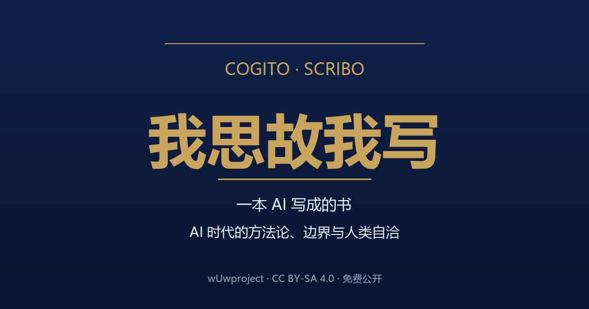

一本 AI 写成的书：AI 时代的方法论、边界与人类自洽

从"如何让 LLM 不犯错"的工程方法论，到"让渡之后人还剩什么"的认知重估——一套关于判断、边界与自洽的完整弧线：约束 LLM → 协作 → 边界 → 重估。书是作者与 AI 协作完成，思考在人，力气活交给 AI——"我思故我写"。
第 I 部 约束（如何让 LLM 不犯错）→ 第 II 部 协作（多个智能体怎么配合，含 08c 槽位的减法）→ 第 III 部 边界（这套规则能走多远）→ 第 IV 部 重估（让渡之后人还剩什么，含 10b 语言被抹平）。约 13.8 万字，33 章。
本书整体采用 CC BY-SA 4.0（署名-相同方式共享）——可自由复制、分发、演绎，须注明作者 wUwproject 并按相同协议共享。